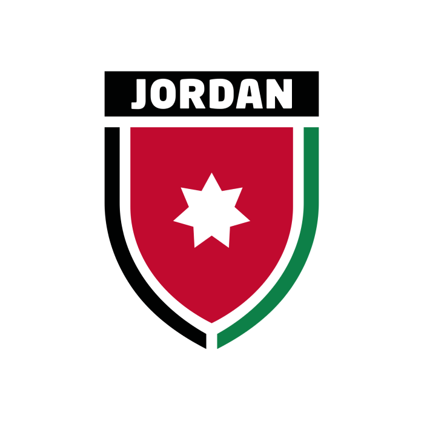
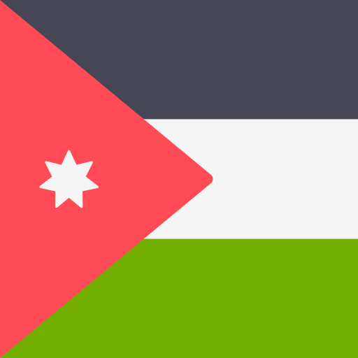
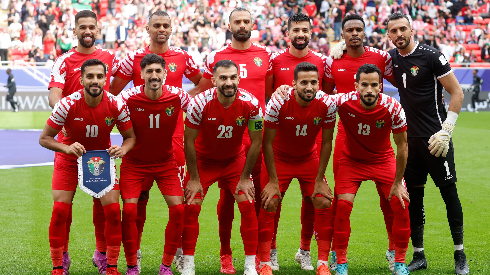
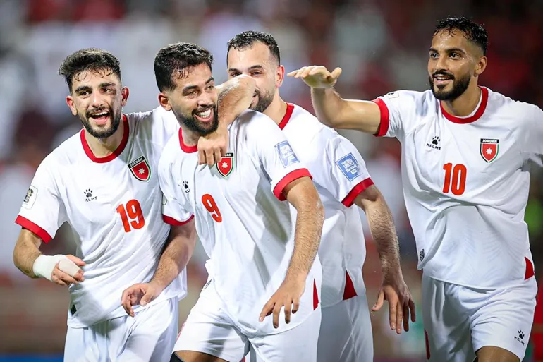

JordanThe Jordan national football team represents Jordan in men's international football. It is under the jurisdiction of the Jordan Football Association.
-

Emblem
-

Nickname(s)
النشامى (Al-Nashama)
The Chivalrous Ones
-
Association
Jordan Football Association
JFA
-

Confederation
AFC
Asia
-

FIFA code
JOR
-

Appearances
1
first in 2026
-

Best result
Group Stage
2026
2026
-

Jamal Sellami
Head coach
(Morocco)
-

1. Yazeed Abulaila
Goalkeeper
Born - January 8, 1993
Aged 33
Caps 76
Club - Al-Hussein
-

12. Nour Bani Attiah
Goalkeeper
Born - January 25, 1993
Aged 33
Caps 5
Club - Al-Faisaly
-

22. Abdallah Al-Fakhouri
Goalkeeper
Born - January 22, 2000
Aged 26
Caps 11
Club - Al-Wehdat
-

2. Mohammad Abu Hashish
Defender
Born - May 9, 1995
Aged 31
Caps 56
Club - Al-Karma (Iraq)
-

3. Abdallah Nasib
Defender
Born - February 25, 1994
Aged 32
Caps 65
Club - Al-Zawraa (Iraq)
-

4. Husam Abu Dahab
Defender
Born - May 13, 2000
Aged 26
Caps 18
Club - Al-Faisaly
-

5. Yazan Al-Arab
Defender
Born - January 31, 1996
Aged 30
Caps 80
Club - FC Seoul (South Korea)
-

16. Mo Abualnadi
Defender
Born - February 8, 2001
Aged 25
Caps 18
Club - Selangor (Malaysia)
-

17. Salim Obaid
Defender
Born - January 17, 1992
Aged 34
Caps 11
Club - Al-Hussein
-

19. Saed Al-Rosan
Defender
Born - February 1, 1997
Aged 29
Caps 21
Club - Al-Hussein
-

23. Ihsan Haddad
Defender (captain)
Born - February 5, 1994
Aged 32
Caps 92
Club - Al-Hussein
-

26. Anas Badawi
Defender
Born - September 13, 1997
Aged 28
Caps 1
Club - Al-Faisaly
-

6. Amer Jamous
Midfielder
Born - July 3, 2002
Aged 23
Caps 19
Club - Al-Zawraa (Iraq)
-

8. Noor Al-Rawabdeh
Midfielder
Born - February 24, 1997
Aged 29
Caps 68
Club - Selangor (Malaysia)
-

14. Rajaei Ayed
Midfielder
Born - July 25, 1993
Aged 32
Caps 72
Club - Al-Hussein
-

15. Ibrahim Sadeh
Midfielder
Born - April 27, 2000
Aged 26
Caps 57
Club - Al-Karma (Iraq)
-

18. Mohammad Taha
Midfielder
Born - July 13, 2005
Aged 20
Caps 2
Club - Al-Hussein
-

20. Mohannad Abu Taha
Midfielder
Born - February 2, 2003
Aged 23
Caps 29
Club - Al-Quwa Al-Jawiya (Iraq)
-

21. Nizar Al-Rashdan
Midfielder
Born - March 23, 1999
Aged 27
Caps 47
Club - Qatar SC (Qatar)
-

25. Mohammad Al-Dawoud
Midfielder
Born - April 12, 1992
Aged 34
Caps 13
Club - Al-Wehdat
-

7. Mohammad Abu Zrayq
Forward
Born - December 30, 1997
Aged 28
Caps 41
Club - Raja Casablanca (Morocco)
-

9. Ali Olwan
Forward
Born - March 26, 2000
Aged 26
Caps 66
Club - Al-Sailiya (Qatar)
-

10. Musa Al-Taamari
Forward
Born - June 10, 1997
Aged 29
Caps 92
Club - Rennes (France)
-

11. Odeh Al-Fakhouri
Forward
Born - November 22, 2005
Aged 20
Caps 10
Club - Pyramids (Egypt)
-

13. Mahmoud Al-Mardi
Forward
Born - October 6, 1993
Aged 32
Caps 89
Club - Al-Hussein
-

24. Ali Azaizeh
Forward
Born - April 13, 2004
Aged 22
Caps 4
Club - Al-Shabab (Saudi Arabia)